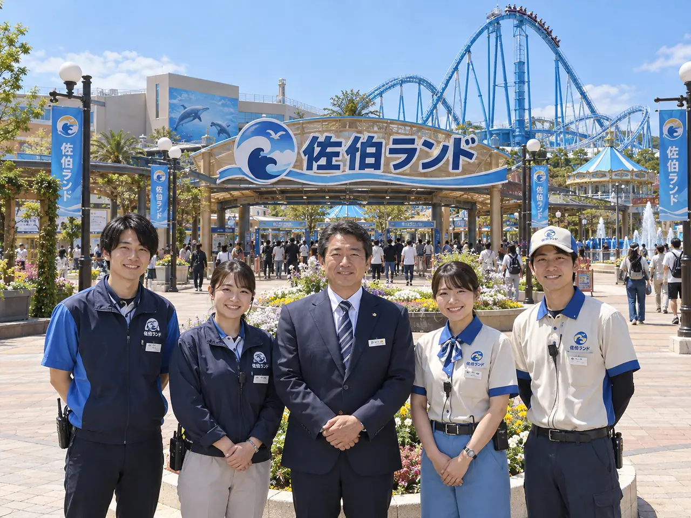
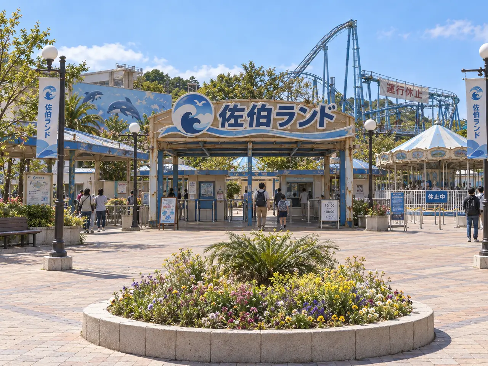

N国 因果観察室・CASE 0047
順番にお読みください 遊園地版・プレテスト
v0.7-PT4
2026-10-25 13:11 JST
2026-10-25 13:11 JST
PROLOGUE｜2030年・N国任務説明 1 / 2
この遊園地は、
もっと大きかった。
あなたは、N国の因果観察室に配属された新人観察官。国の成長を支える歴史を守ることが、あなたの仕事だ。
2030年。国を代表する観光企業へ成長したはずの「佐伯レジャー株式会社」は、小さな遊園地を残すだけになっていた。

保護記録｜本来の2030年観光産業を牽引する巨大テーマパーク

現在｜改変後の2030年縮小した遊園地
因果観察室・緊急指令 CASE 0047
敵国による歴史操作を検知。改変の起点は2026年の新アトラクション「星渡り号」開発記録です。歴史のつながりを復元し、N国の本来の2030年を取り戻してください。
プレイ時間の目安：約5〜10分。国・企業・人物はフィクションです。